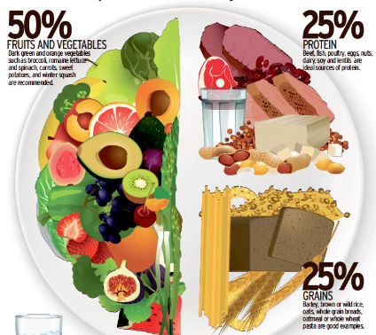

Healthy Eating Tips
50% Vegetables, 25% Protein, 25% Grains - A balanced diet for optimal weight loss.

Intermittent Fasting: 8 hours eating, 16 hours fasting - A sustainable weight loss strategy.
| Time | Meal | Description |
|---|---|---|
| 11:00 AM | Breakfast | A smoothie with spinach, banana, almond milk, and a teaspoon of chia seeds. |
| 2:00 PM | Lunch | Chicken and vegetable stew with a side of roasted sweet potatoes. |
| 5:30 PM | Afternoon Snack | A small slice of tortilla Española (Spanish potato omelet). |
| 8:00 PM | Dinner | Gazpacho with whole-grain crackers. |
50% Vegetables, 25% Protein, 25% Grains - A balanced diet for optimal weight loss.
Intermittent Fasting: 8 hours eating, 16 hours fasting - A sustainable weight loss strategy.